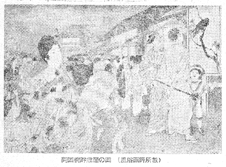
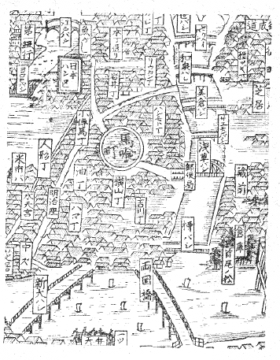
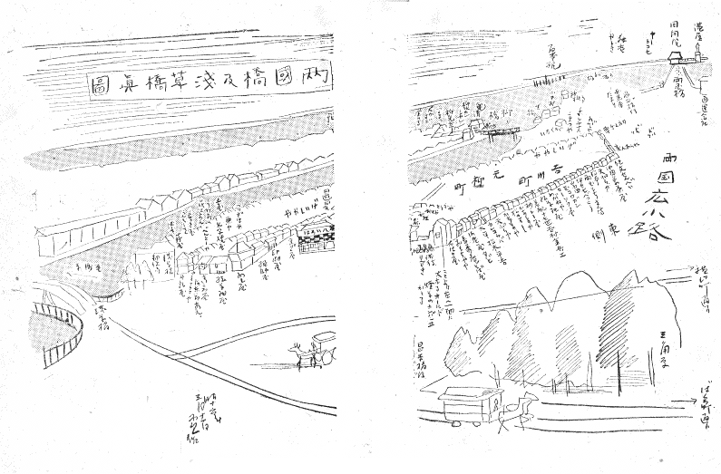
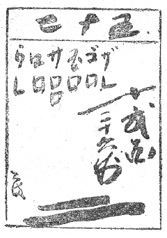

永井さん（荷風子）が「日和下駄」の中の一節に路地について記された件りがある。
「……両国の広小路に沿うて石を敷いた小路には小間物屋、袋物屋、煎餅屋など種々なる小売店の賑はふ有様、正しく屋根のない勧工場の廊下と見られる。横山町辺のとある路地の中には矢張り立派に石を敷詰めた両側ともに長門筒袋物また筆なぞ製してゐる問屋ばかりが続いてゐるので、路地一帯が倉庫のやうに思はれる処があつた。」
「……路地はいかに精密なる東京市の地図にも、決して明らかには描き出されてゐない。どこから這入つて何処へ抜けられるか、あるひは何処へも抜けられず行止りになつてゐるものか否か、それはけだしその路地に住んで始めて判然するので、一度や二度通り抜けた位では容易に判明すべきものではない。」
「……路地は即ち飽くまで平民の間にのみ存在し了解されてゐるのである。犬や猫が垣の破れや塀の隙間を見出して自然とその種属ばかりに限られた通路を作ると同じやうに、表通りに門戸を張ることの出来ぬ平民は大道と大道との間に自ら彼等の棲息に適当した路地を作つたのだ。路地は公然市政によつて経営されたものではない。都市の面目、体裁、品格とは全然関係なき別天地である。されば貴人の馬車、富豪の自動車の地響に午睡の夢を驚かさるゝ恐れなく、夏の夕は格子戸の外に裸体で涼む自由があり、冬の夜は置炬燵に隣家の三味線を聞く面白さがある。新聞買はずとも世間の噂は金棒引きの女房によつて仔細に伝へられ、喘息持の隠居がセキは頼まざるに夜通し泥棒の用心となる。かくの如く路地は一種いひがたき生活の悲哀の中に自らまた深刻なる滑稽の情趣を伴はせた小説的世界である。而して凡てこの世界の飽くまで下世話なる感情と生活とは、またこの世界を構成する格子戸、

両国橋畔燈籠之図（風俗画報所載）
「横山町辺のとある路地の中」とあるのは、浅草橋から見て西へ、馬喰町の四丁目から一丁目へかけての片側と、横山町の三丁目から一丁目まで、それから少し通油町へかけて、この町家の中をまつすぐ貫いてゐる路地を指すものに相違ないが、これはやがて南北竪筋のみどり川へぶつかり、これに架る油橋で止まる。それまで相当細長い道中を、板じんみち、石じんみち、と一丁目毎に区切つて呼んでゐる。路地の路面に板が敷いてあるか石が敷いてあるかによつて、わかり易く分けて呼んだ通称である。ことはいふまでもなく、板が敷いてある――といふのが、元々それは大下水の蓋になつてゐるわけである。路地の通路の板なり石を一皮剥げば、真黒な下水ドブが現はれようといふ勘定だ。しかもこのドブの蓋の上の狭い通路をはさんで両側から、家々が背を向けようどころか、対々に堂々と正面向きで相向つてゐる賑はしさが、この細長いじんみちの尽きぬ面白さであつた。
去る大正十三年のことだつたが、ぼくは友人の上原長柏、西野治平、高見沢遠治三君と互に記憶を分ち合つて（何れも昔近くに住み交はした者同士だつたが、すでに上原・高見沢両君亡く、これも長逝された吉田白嶺氏も談合に参加した。白嶺氏はわれわれ組が西両国だつたに対して、一人だけ東両国党だつた）、お互ひに昔住んでゐた土地のなるべく昔の一軒々々の家々の有りやうを地図にかき入れておいたものがある。――それによると、さすがに表通りは横山町、吉川町、米沢町、元柳町、薬研堀町等々、互ひに相当詳しかつたけれども、細かい路地の一軒々々、といふまでには調べ尽されてゐない。そのくせ親しさは日常、一日に必ず一度は四丁目の頭から一丁目の尻尾まで通り抜けずにゐなかつた、足音や話声の高く特殊に響く路地裏。――
先づその北寄り（馬喰町四丁目と横山町三丁目の間）の角が、横山町側は紐屋、馬喰町側は一ぜんめし屋に始つて、この角店のめし屋の障子越しにいつもぷんと鼻を打つ独得な匂ひは、確かに板じん道へはひるには無くてはならぬ一つのものだつた。めし屋の隣りが洗出しのくゞり門に紺暖簾の桂庵、それから一軒おいて京染屋、この隣りが象牙細工、一軒おいて亀甲屋がある。われわれ子供は、この亀甲屋で仲間の「仲」の字を刻んだお揃ひのメダルを作つた事もあつた。こゝの長男は、夏は伊東水練場の助教で鳴らしたものだつた。その隣りの角が差配の山田さんで、次が坂本といふ家。五六軒飛んで清元の師匠。それから順に、太田の牛乳屋さん。髷屋。かもじ屋。仕立屋。その隣りが水野の梅チヤンといふものゝ家、しもたやで、板新道が終る。
反対側の横山町は、紐屋の次が五六軒飛んで按摩。隣りが駄菓子屋。それから仲間の安倍君の家、これはわかり良くいへば望月太左衛門の家で、われわれの仲間の安倍君は今の芸名でいへば、樫田喜惣次だ。その次がシゲノ、それから忽然と窮屈にこゝに鳥居の立つたお稲荷さんがある。いつも賑々しく赤旗や白旗が立つてゐたものだ。その隣りが土蔵で、それからインク屋。この側の板新道のはづれが丸かねといふ家である。
一軒おいてまた何軒飛んで……といつたのはそれだけ附落ちになつてゐる家数であるから、恐らくそれ等もよく覚えてゐたら又それぞれに路地の中の各種の商売屋だつたらう。
尤も多少はその中に、表通りの家のこの路地まで突き抜けてゐる背中もあつたかも知れない。試みに横山町の表通りを北から南へその裏が板じん道になる間だけを軒別にあげて見れば――先づ角の足袋や植村に始つて、葉茶屋の大木上条。メリヤス商鈴木。池上。数珠の田中。ネクタイの小山商店。その次が紙問屋の根津。袋物屋の柏屋。又紙屋。三好屋の上原が三軒つゞきで（これがぼくと一緒にこれ等の軒別を調べた友人長柏君の家）、その隣りが藤花屋。文学博士後藤末雄さんの家だ。それから辻岡。がまぐち屋。三日月屋……となる。
路地は板じんみちの先きになほ二丁目、一丁目へとかけてこんどは石じんみちに変る。それだけまたも商家が連綿とつゞくわけだ。少時の見聞は狭いので、二人三人と寄つても、板じんみちから先きの石じんみちまで軒並みに記憶はたどれなかつた。――尤も石じんみちの方には小売商よりもおろし問屋の、地味なわれわれ子供には当時興味の少ない家々が多かつたやうである。（永井さんの文章横山町の路地は恐らくこゝを記されたものだつたらう。）玩具屋のたぢま屋にブリキ細工のいろいろなものがあつていつも飽かず覗いたことをよくおぼえてゐる。それから突如として通油町寄りに路地の中に濶然と金魚屋があつてこれが異色だつた。なんでもその家の中へ二三歩路面よりも低く段々ではひれるやうになつてゐたと思ふ。
若しこんなぼくの書きものがこれでも一つの文献になるとすれば、少くも明治三十五年かれこれの横山町の路地のいひ立ては、大体この辺で間違ひは無い筈である。そしてこんなプロザイックな軒別のいひ立てにも、別に永井さんの路地を叙した不滅の芸術的文献が消えない限りは――それへの素材の裏付として――一つの意味はあらうといふものだ。たゞ、いかんとも残念ながら、絵の方には明治以後にほとんど一枚の路地をうつした作品も無く、これはまた写真さへ、路地を写したものは残つてゐない。
平素ぼくは思つてゐることであるが、土地の「名所案内」と云つたやうなものは却々編輯の難しい仕事である、と。一般に東京案内の類で見ても、例へば、両国橋の側面から大写しにした姿ならば何の本にでもその図がのつてゐる。しかしその欄干の具合といふことになると、その一枚の残影をさがすのに後年ぼくのやうな物好きが小十年はかゝるといつたあんばいで、銀座通りの写真は腐る程あつても、横山町となるとばつたり少なくなり、ましてやその裏影の路地となると、残影は全然一つも無い。横山町の路地を写した写真は非常な偶然で当時の素人写真でも見付ける以外には、文字通り今では世界中に一枚もその面影は伝はらないといつて、間違ひになるまい。しかも実は世相風の滋味なり面白さはこれ等にこそ尽きまいものを。
永井さんもその文章の中に路地を「屋根の無い勧工場の廊下」と書いてゐられた通り、ぼくは明治時代の路地の繁栄はそのまゝ、やがてそれが立体的に一つの建物にまとまれば百貨店になる、世態風俗の、商法的な先駆だと思つてゐる。各地の裏々を細長く賑やかに這ひまはつた路地の商品なり商法が、その貫祿を稍々大にすれば、上野や京橋筋に散兵線を敷いた「仲通り」的商法となるだらう。更にこれが一転して百貨店のブロックに一個所へ密集した時に、われわれは昔が無くなつたやうに考へ易かつたのは、実はそれはいはゆる発展的解消をこの立体ブロックへと仕遂げたに過ぎぬ現象だつたかもしれない。
名所案内記等には、画文ともに成るべくそんな町なり、建物なり、従つてその生活の契機を捕まへたいものである。その意味でさすがに長谷川雪旦の「江戸名所図会」はよく描いてあるし、明治になつてから東陽堂版の「新撰東京名所図会」も、材料に対して忠実であつたから善本が出来上つた。その後に出来た絵本の名所案内の類は、概して即興写生風に、材料の体系を追はず、たゞデテールだけを記録したものが多かつたやうである。ぼくは少し聚めて見ると、小杉放庵さん（東京四大通さしゑ、明治四十年版）や平福百穂さん（牛と、ろ馬東海道旅行さしゑ、明治四十一年版）、中沢弘光さん（東京印象記さしゑ、明治四十四年版）、それから雑誌「方寸」に拠つた諸家の東京写生等にそれが芸術的でもあればまた文献としても貴重の作品が少なくないことを承知した。一般にこの点だけが惜しいと思はれたのは、概して何れもその絵が草画コマ絵以上の画格は与へられてゐなかつたことである。ぼくは本間国雄氏の絵本「東京の印象」（大正三年版）で両国の絵を見て、この欄干の装飾模様に瞠目しつゝ、やがてこれなんかゞ中期両国の装飾風を後に伝へる、ほとんど唯一に近い文献になるものではないかと考えた。たゞ惜しいことには見るからに草画風である。
明治初年の主に石版の名所絵は、また如実精細といつても余りに、芸術的低調で、これでも困ると思はせる作例が多い。ワーグマンやビゴーの東京風物の写生は、結局類例の少ない、粗に流れず、密に堕さぬ、その仕事としてピッチの高いものであつたらう。それと、小林清親や井上安治が面白く、近ごろのものでは織田一麿や川瀬巴水の東京版画に、文献と芸術価値を兼ね備へたいゝものがある。
子供の頃は、所詮狭い地域を天地と考へて悠遊するものだ。僕は両国界隈に悠遊したつもりでも、それは両国吉川町（ぼくはそこで生れた）を中心として東は隅田川を隔てゝ両国橋の対岸に及ばず、北は神田川を隔てゝ浅草橋を越えて、瓦町に及ばない。両国橋の対岸は本所区で橋を渡ると元町になり、回向院がある。この川沿ひの北は藤堂屋敷と云ひ馴らした百本杭のところである。
また神田川を境界として浅草橋を渡れば浅草区になり、その大通りは茅町、瓦町、須賀町……といつた順序で北進して蔵前から浅草に向ふ。ひと頃島崎さん（藤村子）の住んでをられた新片町はこの大川寄りの一劃に当り、その向う町内の平右衛門町には大六天があつたし、大通りの須賀町に天王様があつた。ぼくは祭り祭りにこれへは小さいころから行き馴れたものゝ、平素は、浅草橋を渡つて瓦町まで進入することは滅多になかつた。（瓦町にはひと頃小山内薫さんが住んでをられた。）
一方、自分の区内（日本橋区）の天地は、これも今思へばほんの狭小にすぎず、南は大川寄りの薬研堀、矢の倉を出ず、西は馬喰町を出ない。矢の倉にはその頃妙に柳の木が多いやうだつたが、その辺によくほえる大きな犬がゐたのと、日が暮れると柳の木の下に天狗が出るといふので、ぼくは長年の間、空が暗くなると矢の倉の方角が怖かつた。
「東京案内、一名遊歩の友」と題する明治二十七年版の絵本に、わかりよくとぼけた鳥瞰図の地図が出てゐるから、これを一部分だけこゝに示さう。

両国界隈図
ぼくはこのわくの中で育つて、完全に少年期をすごしたので――ぼくは十七歳までこの両国界隈を天地としてゐた――少年期の終り時分にはいふまでもなく足もこの圏外へ延ばしたけれども、親しみは依然圏内狭小のところにあり、記憶は殊にその猫額世界に限られる。山に例へていへば記憶はほとんどこの圏内の一草一木一石の細緻に浸透して余さないものがあるやうである。――これを故郷（ふるさと）といふのであらう。
ひと頃、ぼくは誤解？して、都会生れの人間には故郷は「無い」といつた方が当るやうだ、と考へたことがあつた。しかしこれは間違ひであらう。たゞ地方の人の故郷観に比べて「羨望」の情ともいへるものゝあることは、よく地方の人が故郷を談じて、鎮守の森といひ、裏の瀬戸といふやうな話をし、山容、水の流れ、一草一木について語るのを聞く度に、例外はあるにもせよ、大抵その旧物は故郷の山河に依然として旧様をとゞめてゐる模様である。裏の瀬戸に生ひ立つ柿の木なども元のまゝらしい話の様子など、ぼくには夢か奇蹟としか受取れない。
ぼくには何一つとして旧物は残つてゐない。「いづれをそれと尋ぬれば昔在りし家は稀なり」で、ぼくの生れた家の在り場所なども、その後何度、元の土地へ行つて、考へ合せ歩み合せて見ても、さつぱり見当がつかない始末である。
ぼくの戸籍からしてそれと同じやうに、徴兵検査の時分家をして以来、それは京橋区采女町一番地にあるものと思つてゐると、役所の都合で隣り町の京橋区木挽町五丁目三番地といふところへ「職権ヲ以ツテ」変更したと知らせが来た。その後あの辺へ行つて見ると、ぼくの籍のあつた采女町は大々と打渡る昭和通りのコンクリートになつてしまつたのである。木挽町へ片寄せられなければ車に轢き殺されてしまふばかりだつた。
ぼくの少年時代の天地は恐らく地方山間の人の天地とした範囲あたりから比べていへば、驚く可く狭い、ちつぽけなものだらう、殆んど一町四方といつても誇張ではない程の、狭つこい範囲である。
が、これは又、地方山間の人の広々とした記憶経験とは似ても似つかないまでに、ゴチヤゴチヤとして、身辺一間毎に、いや一尺毎に複雑極まりない。――例へばぼくの家からその三尺幅ほどの裏の掃除口の通路をかはしかはしして鍵の手に廻ると、殆んど日の目を見ずに両国広小路へ出られたが、その両側は互の家がぎつしり背中合せで、ぼくの家は煉瓦であるし、裏手の小林さんは下見板、その先きの大平は黒の土蔵造りでがつしりしてゐる。この細い久の字なりの通路から上を仰ぐと、家々の瓦が見え、はるかに一筋に高く青空がのぞける。かういふ隙間の空はすごく高い感じのするものである。
大平といふのは、両国広小路に店を開く絵草紙店の版元であつたが、途中その職場の窓をすれすれに覗きすぎることが出来て、暗いその家の中では、数人の男達がいつもせつせと紙を折つてゐたり、あるひは――今思ふと――せはしなくバレンを使つて木版画を刷つてゐたりした。
しかもこの立体的には四方八方から相当高くせまり、視角に映るものとしては歩一歩複雑な景観の尽きない通路（しやあひ）も、さし渡し間数をとつて見れば、二十間以上ではなかつただらう。
天地の一町四方以内は、距離としては短かいけれども、微粉分子の一杯にまき散らされた粉の中のやうに、われわれ子供は、その八幡の藪知らずにふけり没して飽くことを知らなかつた。
虎や横町といふ通りがあつた。方位からいへば横山町筋と平行する両国寄りの裏通りの一つで、東西に走り、われわれ子供はこれをトラヨコ町と呼んでゐたけれども、両国橋に向つて右側の両国広小路（大通り）に、手前が居酒屋、向うが命の親玉で差挾んでゐる細い通りである。東へ丁字形になる。これが虎（や）横町であつた。
もつとも東へ丁字形とか西へ何とか……いつても、これは今地図の上でほんの付焼刃にいふ記述上の体裁にすぎず、実はぼく当人の実感なり町そのものゝ実感からいつても、道筋の東西南北などといふものは一向わかるものでなく、元々、そんなものはあの辺に存在したと思はれず、トラ横町の中程の精進揚屋とコーモリ傘屋の間の細道をはひると、何でも先々代芝翫のゐた家といふのへぶつかつて、それから、路地ともしやあひとも付かぬ家々の背中同士差迫つた暗い道をうねうねつたはつて行けば、トラ横町より両国寄りにもう一筋先きの横町（加賀屋横町）の、桃太郎団子のところへ出る。加賀屋横町はこの団子屋の隣りが魚屋で、それから床屋、珊瑚珠屋があつて、呉服屋、袋物屋、コーモリ傘の直し屋があり、それから、酒屋で、この横町の角が横町の名に負ふ加賀屋といふそばやである。……かういふ実体はわかるけれども、東西南北は実はわからない。
トラ横町の「虎屋」も大方さういふ何かの角店か名代の店があつての名であらうが、或る本によると、菓子屋の店頭に木彫の虎が据ゑてあつた、それから来たのだといふことである。
両国広小路の現況
「往時は、観物、辻講釈、百日芝居と甚だ雑沓の巷なりしも、近年旧態を一掃して、商家櫛比、殷賑の市街とはなりにき。米沢町には五臓円本舗大木口哲、横山錦柵が
一般に「両国界隈」は刊行本によれば上述のやうに記してあるのが常だが、横町の名までは及ばないのである。
またよしんばそれ等をぼくなんかゞおぼえてゐようと、そしてかうして書き残さうとも、その実近年の当人はすでに元来の「虎屋」を「トラ」、加藤清正のあの虎と初めから解釈してゐるほど曖昧なものであるから、それから見れば幕府の博労頭が馬場を預つてこゝにゐたから初め博労町だつたものが、中途馬喰町と書き替へられたといふ「バクロ町」の伝来などは、変化も極めて由緒正しいものといふべきであつた。やがてはタカタノババはタカダノババとなる。かういふ刻々の変化には、いかな克明の年代記と雖も、一々には追付けない。虎屋がいつか変じてトラになつた伝来あたりは、まだ御愛嬌の方であらう。
いろは第八番の家の前に「栽培せる楊柳数十株点綴する間」とある。これは火除地の、われわれ「三角原」と呼んだところを指すものであらうが、いろはの前には、また別に西日をよけるための青桐が十本近く植ゑてあつた。われわれが漸くなじんだ「青」いものといへば、この梧桐と、三角原の柳だけであつた。梧桐を家の前に植ゑ立てるについては、父が市会議員だつたので、それで「許可」が下りたとか聞いた。父は一ころの、星亨の派だつたらしいが、護身用に大形の六連発拳銃を持つてゐた。
――トラ横町に、角から四軒目にげほうと通称する草履屋があつた。げほうの頭に梯子をかけと歌の文句にいふあのげほう、福祿寿であるが、これもどうしてさう通称したかは知らないけれども、今でも目に残るのは、そこの主人のチヨン髷を載せた頭である。云ひ替へれば、われわれ子供の頃には、まださうしたチヨン髷が、たつた一人にしても、商家の現役の店頭に坐つてゐたのを見ることが出来たといふことだ。げほうから二軒おいて先きの、われわれ「カミドコ」といつた、理髪店
これも同じトラ横町の外れに、柳湯といふ銭湯があつたけれども、こゝにぼくなんかの子供の時分――おふくろや女中と一緒に女湯へはひつてもよかつた時分、明確の記憶とはいへないけれども
この柳湯は芸妓達のよく行つた風呂で、日のくれる前に、その風呂帰りの芸妓達がピンと双方からびんに毛すぢ棒をさして頤から下を真白に塗り上げた顔をしながら、ぼくの家の前を通り通りするのを、いつも見たものだつた。
トラ横町の記憶はそれからある角の神崎洋酒店の家の横面全面を使つた大きな老人の顔の、雪月花の広告絵であつたが――しかしこれはあるひは本石町の角の鉄道馬車の曲るところに、こゝには確にあつた、その広告絵との混同かもしれない。銘酒雪月花のびんを両手に捧げて
そしてトラ横町は、神崎洋酒店の角から、南へ走る薬研堀横町及び米沢町に交叉するのである。

「両国橋及浅草橋真図」模写
「両国橋及浅草橋真図」は、丁度ぼくの扱はうとする限りお誂へに写した井上探景（安治）の版画で、前に述べた大平（松木平吉）板の、御届明治十○年○月○日と記入のあるものだ。（この○は何れも一字空白となつてゐる）。――ところで、この図の中程に見える、間口をだゝつ広くとつて、二階前面のガラス戸に五色硝子をあしらつた角店が、ぼくの丸十七年間生活してこゝでウキヨの風に当つた、第八支店いろは牛肉店といふ、飲食店なのであるが、絵の右端に遠くパースペクチブになつて消え込むところが両国橋、そのつき当りに大きく回向院の屋根が見えて、その並びの最右端にぽつんと尖つたものゝ見えるのが、港屋といふもゝんじ屋だ。牛肉のみならず野獣肉一切を商つた店で、却々ハイカラにその三階が西洋館になつてゐた。ところが、このぽつんと高く尖つたハイカラの三階へ雷が落ちて、そこの老人がつんぼになつたといふことであつた。
それが明治三十七年のことで、といふのが、ぼくの弟の誕生したのが同じ年、のみならずこの図の馬車の軌道並みにこれが始めて電車になつた年がまた同じなので、記憶がはつきりとするわけである。――ぼくはその時丁度十一歳であつたが、草色のわれわれガイテツと呼んだ電車（市街鉄道であらう）が通つた時には嬉しくて、殊にそれから毎日楽しみとなつた路上の遊戯は、そのガイテツに五寸釘をひかせることである。線路の上に載せた釘がガイテツにひかれると、忽ちぺしやんこになつて、手頃の光つた槍の穂先きが出来る。これを竹の先にすげておもちやにするのである。
この図の共立社とある馬車は、この「共立社」はぼくは知らないけれども、無軌道の、柳原通りを駈けたガタ馬車がこれだらう。二頭立のカバ色に塗つた方の線路の上の馬車は、後年これが奉天へ身売して二度の勤めをしてゐるのを向うで見て（大正九年のこと）、懐旧の情にたへなかつたことがあつた。
井上探景はこの図を何年に作つたものだつたらうか。明治二十年代ではないやうであるが、とに角ぼくの生れる以前で、大体ぼくの家が第八いろはの招牌をこの家に掲げたのが明治十九年のことといふから、図の五色ガラスから類推して、丁度その時分に写されたものかも知れなかつた。そして作者の井上安治は、やがて明治二十二年の九月には、ほんの二十歳を少し出たばかりの若さで夭折してゐるのである。
明治十九年以前、いろはになる前のこの家は、初め綿を打つていた家だつたさうだが、商売に外れて四度も代替りをした揚句、土地の松本といふ差配が持て余してゐたのを、ひとゝは変りものの僕のおやぢが、さういふひとの外れる家ならおれにはきつと当るだらうといつものケントクから、月二十二円の家賃で一先づ借りたといふことだ。それから改めて千円若干に仕切つたといふ。
この家はいろはになつてから、俄然、当つたのであつた。――計らず身の回りのことを述べてよくなかつたと思ふけれども、本意は、自分事よりも、月二十二円の家賃などという物価はをかしいと思ふのである。千円もをかしい。今でいへばその何層倍と考へ替へたらいゝか、見当の付きかねる相当大きな家で、前回りは木造、後構へは煉瓦造りの総二階だつた。
――この「いろは牛肉店」に関することなども僕に文筆が伸びれば、書けば「材料」は凡て一風変つた生活の、面白いことが数々あるけれども………

帳付け
図はいろは牛肉店の帳付けの仕方であるが、上の数字は客の下足番号、下の横長い数字は客の人数を示し、ウは並牛のこと、一人前当時十五銭。ロはロース肉で二十銭。サは酒の一合十銭。玉は玉子五銭。ゴはゴブといひ、これは五分のことで、ねぎを丸ごと横に五分々々ゴブゴブと切る。即ちゴブ、一人前三銭。ザはザク。矢張りねぎをざくざくとはすに切る。従つてゴブより多少盛りが少くなる道理の、一人前二銭。かういふ酒をのんでめしを食はない通しものを「
実はぼくは中学を出てから白馬研究会へ通ふことになるまで、絵かきになるまでは、右の帳付けをするいろはの
まだ――こんな風な雑識は沢山あるけれども切りがないから、探景の図に戻つて、この界隈の元在りし家の軒別をざつと表解風に書いて見よう。
図の手前の樹木のあるところ三角原は、焼打騒動の時に（明治卅八年）、この三角原と浅草橋とが「戦場」となつて人を橋向うへ渡すか渡さぬかの、夜つぴて「戦闘」のあつたところである。焼打の夜更けには佐太郎などは向う脛を血だらけにして、ハアハア息を切らせながら大戸のくぐりを開けて帰つて来た。ぼくは女中達や家の者と一塊りにかたまつて、二階の色ガラスのところから手に汗をにぎつて一晩中三角原を見物してゐた。
この原に一本高くアーク燈が立つてゐた。その「孤光燈」の焼け切つたシンが落ちたものであらう、朝学校への行きがけにアーク燈の柱の下へ行くと（学校は図の浅草橋のすぐ袂だつた）、きまつて三寸ほどの、黒い丸い棒が下ちてゐた。われわれはこれをデンキのチンボコと呼んで、珍重したものである。
この図は三角原が一番手前でそのこつち側は切れてゐるけれども、こつち側に、この原のすぐ右手に横山町もあれば「路地」もある訳だし、更に北へと、馬喰町の一丁目から四丁目までが展開する。その中には矢場ぐんだいと称する特殊の一劃（私娼窟）なども突然町中にはさまつてゐる昔の奇観は、数限り無いものがある……。
別に次の一節は、吉川町について特に以前（昭和七年八月）書いておいたものだが、再録する。ぼくの家を含む一帯がその「吉川町」である。
「吉川町、昔時萱葭繁茂し其中に小流ありしが之を埋立て市店を開き葭川町と称し其の後今の字に改む、西両国西広小路にあり、両国橋旧位置の西に当れる地を称す。」
これが明治四十年四月出版の「東京案内」に現はれる公文書風の説明ながらこの本は東京市役所の蔵版ものだ。別に大正二年八月の出版もの「日本橋繁昌記」に従ふと、当時の戸数が読める。
「戸数百十二戸、人口男二百〇七人、女二百九十七人合計五百〇四人なり。」
この女が多いのは、例へば一番地のぼくの家でも既に野郎より女は多い勘定だつたが、加ふるに同町内には、
○ 一等芸妓の部、さだ子事長谷川てい、吉川町七番地。栄事酒巻また、同町九。なる子事潮田ハル、同上。うた事原はる、同上。
○ 二等芸妓の部、吉川町三の福若松に小かつ、いろ、小さん、こい。四番地の吉野屋に八重次、初若松に初子。武蔵家に二郎、三郎、五郎、八郎、十郎。五番地の蔦家に〆太郎他二人。柳家一人。吉村家に四人。富多国家に三人。
かういふ軍勢があるからである。これは二度と、書くものでないから序でに飛んで大正十四年版の東邦社発行「花柳名鑑」から、この手の吉川町人種を抜き出して補ひを付けておけば、
○ 柳橋芸妓屋、事務所、日本橋吉川町一〇、電話浪花、略。浅草、略。理事長、栄家酒井千代。理事、伊勢家柳島カネ。評議員、花家福井トキ、同桝徳の家岡山うた子。それから平の芸妓が同町内で二番地から十番地まで順に浪花家、富多国家、初若松、吉郎家、沢潟家、若喜家、高徳家、辰桜家、蔦家、浜の家、杉和泉、徳の家、杉日の家、初の家、花本、吉村家、小若松、千代伊セ家、分伊セ家、竹二国家、山桜家、松新丁字、松恵比寿、増田、福の家、喜久家、秀栄家、梅福の家。
――これが町内の軒別で、この一番初めの二番地の浪花家といふのが、一番地の角のいろはから裏手へ五軒目の、いろはの次がしもた家の小森、次が加藤、それから桶家、次は豆腐屋であつて、この隣りに始まり、それからはずらりと吉川町を出外れの車宿秋初へ行くまでの、大体御神燈の順序となる。（この社会には家号や代替りは相当頻繁であるから、既に大正二年と十四年では同一ではない。たゞかういふ感じといふだけは、これはその前の明治年間からも変らない意味合ひで上げたものである。）町内で女が男よりも多いのはこれでたちまち判然とする。東陽堂の「新撰東京名所図会」第二十七編、日本橋の三には（明治三十三年十二月発行）、吉川町の「概況」として、かうある、
「裏通りは元柳町に接するを以て、芸妓屋軒を列ねたり、表通りは両国広小路にて商家殷賑を極む。いろは第八支店、一番地（牛肉豚肉販売店）。大黒屋、二番地（美術錦絵画譜画帳出版業）。金花館、三番地（勧業場）。横浜勧業銀行東京支店、五番地。古矢カマ、八番地（産婆）。両国恵比寿屋本店、九番地（餅汁商）。紀文堂、九番地（煎餅商）。」
元柳町は吉川町の隣りの町であるが市役所の「東京案内」に、
「元柳町、昔時幕府の同朋が受領したる地也、その柳原の末にあるを以つて下柳原同朋町及新地と称せり。明治五年四月柳橋の傍にあるより今の名に改む。里俗元と表町裏町の称ありたり。神田川北を流る。」――かう説明される土地である。
ぼくのつまらぬ書きものがこんな時節外れにも拘らず読む人を持つてゐると聞いて、却つて気がひけて来た。ぼくはたゞ自分の書き反古を以て、それを活字に拾つておいて貰ふ気にすぎなかつた。ぼくは文学者でないに拘らず文字でないと記しにくゝ伝へにくい、一種の材料として大変いゝものを持つてゐるやうである。材料はたしかに公刊書の印字に付しておいて無駄でないものなのだが、いかんせん、その調理法については、ぼくでは間に合ひにくいものがあるので、かねがねわれながらこれを遺憾に思つてゐた。今も同じ遺憾のまゝこの記を草するのに、土地はその後再三の地変災厄を経て、一物の昔をしのぶよすがもない。筆者がぼくでなく、ちやんと文章のてにをはに年期を入れた人の、この材料であつたならば、さぞやすぎ去つた両国界隈の面影は見る見るこゝに丸彫りに浮び上つたらうに。――心残りである。